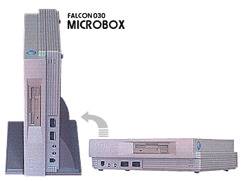

|
The Falcon as we know
it was
initially designed to fit
the same form factor as the standard STE case with some
very slight alterations so it could accommodate new
connectors and ports. The basic thinking here was to
produce a cost effective platform to launch the new Falcon
system and produce enough "developer"
units as quickly and as cheaply as possible.
When the
first "Sparrow" systems (codename at Atari for the Falcon
project and the subsequent name for developer machines)
were released it didn't matter that the Falcon hardware
utilised the older STE case because they were not planned
on being marketed with that design, these were just boxes
with the final beta hardware so Atari's third-party
developers could start learning the architecture and begin
producing the all important software for the platform.
It is clear
that priority was being given to the imminent launch of
the new videogames system "Jaguar" within Atari, and all
computer projects were slowly being phased out around
1992. The Falcon programme was still being given
resources however, and although it was the last live
computer programme within the company, it managed to
garner enough support to see it through to launch.
Given the precarious position of the Falcon inside the
company, it was probably worth the risk to continue the
platform with most of the research and development
completed, but with budgets being directed into the
Jaguar, the only viable option was to launch the Falcon in
its current form factor and into an existing Atari
computer chassis.
The tooling
of a new computer housing or case/chassis is an expensive
process, so Atari took the decision to use the existing
STE case, costing Atari no more than approximately $15 to
produce (compared to a typical BOM (Bill Of Materials)
price on the 1040STE case as of 1990). With an
expecting public awaiting the arrival of the new high-spec
Falcon, the system was finally ready to go albeit in a
somewhat tired old case design.
It was a
little bit of a shock to most people when the the
Falcon030 was shown in the STE case (although the colour
of the case and keyboard was changed to differentiate the
product), but the official word was that this was only
temporary and a new design was being worked on.
Although the story changed, with some saying this was the
"low-cost" version of the Falcon and a newer high-end
version would be given the new facelift. Atari was
receiving pressure to make a physical change to the look
of the newly released Falcon from many quarters, but
considering how lucky the consumer was to actually see the
product released, any commitment to make that change would
need sales figures to back up any further investment.
Although no
new case was ever produced, Atari did work on several
designs. Some prototypes were produced, and Atari
even went as far as telling some journalists the name of
the new case, which would be called the "Microbox".

There are 2
versions of the Microbox, one has
a Floppy Disk Drive on the front-right of the system
and a nice optional vertical stand (above) which
was for the 030 Falcon, and a CD-ROM version which we currently believe was for
the 040 version. |